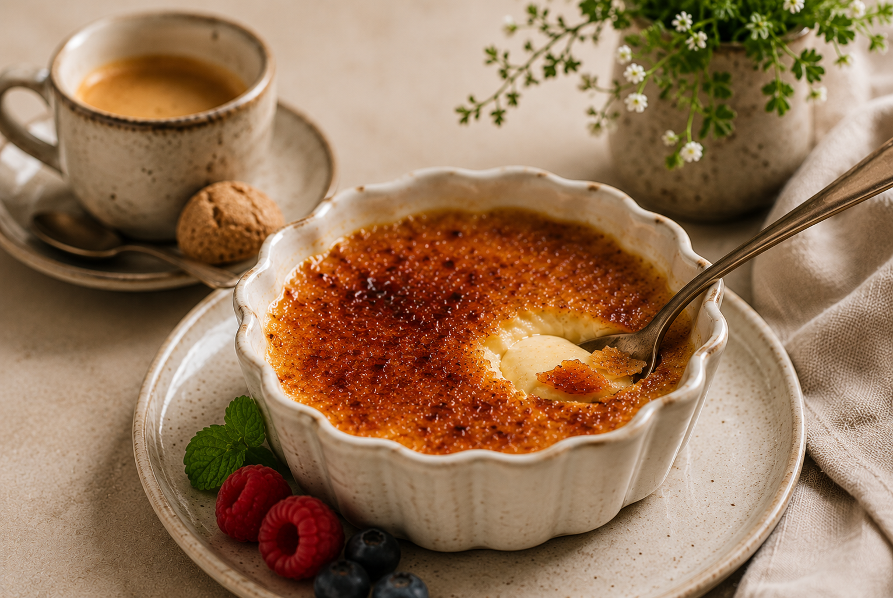

Ein bisschen Platz ist noch
Crème brûlée

Zutaten
400 ml
Sahne
140 ml
Vollmilch
85 g
Brauner Zucker
5 Stk.
Eigelb
1 Stk.
Vanilleschote, davon das Mark
Zitronenabrieb
Weißer Zucker
Zubereitung
- Sahne, Milch und Eigelb miteinander verquirlen. Anschließend mit den restlichen Zutaten verrühren. Mindestens 30 Min. ziehen lassen, gerne auch über Nacht.
- Die Creme auf 4 große oder 6 kleine feuerfeste Förmchen verteilen und in eine tiefe Auflaufform stellen.
- Die Form mit kochendem Wasser auffüllen, sodass die Förmchen im Wasserbad stehen. Bei 150 °C Ober-/Unterhitze ca. 55 Min. stocken lassen.
- Förmchen vollständig auskühlen lassen und anschließend für mindestens 2 Std. in den Kühlschrank stellen.
- Vor dem Servieren jedes Förmchen gleichmäßig mit ca. 1 EL Zucker bestreuen.
- Den Zucker mit einem Flambierbrenner karamellisieren, bis eine gleichmäßige, knusprige Karamellschicht entsteht.